Centro Universitário Internacional UNINTER
{{CURSO}}
{{NOME}}
Rede Raízes do Nordeste:
interface multicanal para pedidos, pagamento desacoplado, fidelidade e LGPD
Projeto Multidisciplinar – Trilha Front-End
{{CIDADE}}
{{ANO}}
{{NOME}}
Rede Raízes do Nordeste:
interface multicanal para pedidos, pagamento desacoplado, fidelidade e LGPD
Trabalho apresentado à disciplina de Projeto Multidisciplinar, trilha Front-End, do curso de {{CURSO_TEXTO}} do Centro Universitário Internacional UNINTER, como requisito parcial de avaliação, a partir do estudo de caso “Rede Raízes do Nordeste”.
Aluno(a): {{NOME_TEXTO}}
RU: {{RU}}
Polo de apoio: {{POLO}}
Semestre: {{SEMESTRE}}
Professor(a): {{PROFESSOR}}
{{CIDADE}}
{{ANO}}
SUMÁRIO
A Rede Raízes do Nordeste nasceu como uma lanchonete familiar em Recife, comandada por Dona Francisca e seus dois filhos. Em pouco mais de seis anos, tornou-se uma rede em expansão, com unidades em capitais e cidades do interior. A proposta é levar a culinária nordestina ao dia a dia urbano com rapidez, qualidade e identidade cultural: tapiocas, cuscuz recheado, bolo de macaxeira, sucos regionais e cafés da manhã completos.
O crescimento trouxe desafios. Hoje o cliente interage com a marca por quatro caminhos: aplicativo oficial, totens de autoatendimento, atendimento humano no balcão e retirada rápida (pick-up). As unidades também não são idênticas. Algumas têm cozinha completa e outras operam em formato reduzido; há produtos sazonais, especialmente no período junino, e receitas com variações regionais. A matriz precisa de padronização, rastreabilidade e transparência: vendas por unidade e região, produtos mais consumidos, relatórios financeiros e auditoria de operações sensíveis. Somam-se a isso um programa de fidelidade sujeito à Lei Geral de Proteção de Dados (BRASIL, 2018) e pagamentos processados por serviços externos.
Independentemente do canal, o cliente espera visualizar o cardápio da unidade, selecionar produtos disponíveis naquele local, fazer o pedido, acompanhar o status e receber o pedido corretamente. A interface precisa entregar essa jornada de forma consistente em telas de tamanhos e contextos muito diferentes: o celular na rua, o computador no escritório, o totem em pé na loja e o balcão em horário de pico. Ao mesmo tempo, precisa lidar com falhas reais (estoque que acaba, pagamento recusado, provedor que não responde) e com a obrigação de respeitar a privacidade do cliente.
Objetivo geral: projetar, justificar e implementar a interface multicanal da Rede Raízes do Nordeste, com foco em clareza de fluxo, coerência funcional e alinhamento com o negócio.
Objetivos específicos:
O Quadro 1 resume os perfis atendidos pela interface, o canal que cada um usa e o que precisa resolver.
Quadro 1 – Usuários, canais e necessidades
| Usuário | Canal | Necessidades principais |
|---|---|---|
| Cliente | App (PWA no celular), site (desktop) e totem | Encontrar a unidade, ver o que está disponível, pedir rápido, pagar com segurança, acompanhar o preparo, acumular pontos e controlar seus dados. |
| Atendente | Balcão (PDV) | Registrar pedidos de quem chega sem app, receber no caixa, entregar pedidos prontos e cancelar com justificativa. |
| Cozinha | Painel de produção (KDS) | Ver a fila por ordem de chegada, observações de cada item e tempo de espera; marcar início e conclusão do preparo. |
| Gerente da unidade | Sistema interno | Indicadores da unidade, estoque e disponibilidade, campanhas em vigor e auditoria da loja. |
| Administração (matriz) | Sistema interno | Visão consolidada por unidade e região, relatórios financeiros, gestão de campanhas e auditoria da rede. |
| Provedor de pagamento | Integração (sistema externo) | Receber a solicitação de cobrança e devolver aprovação, recusa ou status da transação. |
Fonte: elaborado no projeto (2026).
Em horários de pico, segundos de espera e telas confusas viram filas, pedidos errados e perda de faturamento. Uma interface que mostra só o que está disponível na unidade, explica cada erro e não cobra o cliente duas vezes reduz atrito na loja e protege a marca. A clareza sobre o uso de dados pessoais, por sua vez, é condição para que o programa de fidelidade exista sem riscos legais e reputacionais.
Este trabalho segue a trilha Front-End, com entrega técnica pela Opção B (codificação). Todos os endereços abaixo são públicos e não exigem login. O Quadro 2 também traz as contas de teste usadas na demonstração.
Quadro 2 – Links de acesso e contas de teste
| Item | Endereço / dado |
|---|---|
| Aplicação publicada (GitHub Pages) | https://ricotta10.github.io/rede-raizes-do-nordeste/ |
| Repositório (código-fonte) | https://github.com/Ricotta10/rede-raizes-do-nordeste |
| Histórico de versões (commits) | https://github.com/Ricotta10/rede-raizes-do-nordeste/commits/main |
| Plano de testes e evidências | https://github.com/Ricotta10/rede-raizes-do-nordeste/tree/main/docs |
| Conta de cliente | cliente@raizes.demo / cliente123 (CPF fictício 529.982.247-25) |
Contas da equipe (senha equipe123) | atendente@raizes.demo, cozinha@raizes.demo, gerente@raizes.demo, matriz@raizes.demo |
Fonte: elaborado no projeto (2026).
Os requisitos foram extraídos do estudo de caso e do roteiro da trilha em quatro passos: (1) leitura do caso para identificar atores, canais e objetos de negócio (unidade, produto, pedido, pagamento, ponto, consentimento); (2) separação entre o que o usuário faz (requisitos funcionais), as qualidades que a solução precisa ter (não funcionais) e as políticas da empresa (regras de negócio); (3) registro das ambiguidades do texto e da decisão tomada para cada uma; e (4) priorização pela técnica MoSCoW (SOMMERVILLE, 2018), aqui traduzida como Essencial, Importante e Desejável. Os requisitos obrigatórios do roteiro foram todos classificados como essenciais.
Quadro 3 – Requisitos funcionais
| ID | Requisito | Canais | Prioridade |
|---|---|---|---|
| RF01 | Cadastrar e autenticar clientes, com validação de campos, senha forte e bloqueio temporário após tentativas inválidas. | App, site | Essencial |
| RF02 | Selecionar a unidade, exibindo endereço, horário, status (aberta/fechada) e formato (cozinha completa ou compacta). | App, site | Essencial |
| RF03 | Exibir cardápio dinâmico por unidade, considerando formato da loja, estoque local, itens pausados, sazonalidade e variação regional de receita. | Todos | Essencial |
| RF04 | Detalhar o produto e permitir escolher quantidade e observação para a cozinha. | App, site, totem | Essencial |
| RF05 | Manter sacola com alteração de quantidade e revalidação de estoque antes do pagamento. | Todos | Essencial |
| RF06 | Realizar pedido informando consumo (no local ou para levar) e retirada imediata ou agendada (pedido antecipado). | App, site, totem | Essencial |
| RF07 | Solicitar pagamento a um provedor externo e exibir o retorno: aprovado, recusado, Pix pendente ou expirado e falha de comunicação. | App, site, totem | Essencial |
| RF08 | Acompanhar o status do pedido em tempo real, com código de retirada. | App, site, totem | Essencial |
| RF09 | Programa de fidelidade: acúmulo de pontos, níveis com desconto progressivo, resgate de recompensas e extrato. | App, site; CPF no totem e balcão | Importante |
| RF10 | Promoções e campanhas com regras de canal, região, público, valor mínimo e validade, aplicadas por cupom. | Todos | Importante |
| RF11 | Gerenciar consentimentos e direitos do titular (acesso, correção, portabilidade, revogação e exclusão). | App, site | Essencial |
| RF12 | Autoatendimento no totem sem cadastro, com CPF opcional para pontuar e reinício por inatividade. | Totem | Essencial |
| RF13 | Registrar pedido no balcão com pagamento no caixa (cartão, Pix ou dinheiro com troco). | Balcão | Essencial |
| RF14 | Painel da cozinha com fila por status, observações e tempo de espera. | Cozinha | Essencial |
| RF15 | Fila de retirada com confirmação de entrega. | Balcão | Essencial |
| RF16 | Cancelar pedidos conforme o perfil, com estorno automático de pagamento aprovado e reversão de pontos. | Todos | Essencial |
| RF17 | Ajustar estoque e pausar ou reativar produtos por unidade. | Gerência, matriz | Importante |
| RF18 | Relatórios: vendas por dia, unidade, região e canal, produtos mais vendidos, formas de pagamento e exportação CSV sem dados pessoais. | Gerência, matriz | Importante |
| RF19 | Ativar ou desativar campanhas e consultar o público segmentado de forma agregada. | Matriz | Desejável |
| RF20 | Registrar e consultar a trilha de auditoria de operações sensíveis e acessos a dados pessoais. | Gerência, matriz | Essencial |
| RF21 | Controlar o acesso às telas internas por perfil (atendente, cozinha, gerente, matriz). | Equipe | Essencial |
| RF22 | Consultar histórico de pedidos e repetir um pedido anterior. | App, site | Desejável |
Fonte: elaborado no projeto (2026).
Quadro 4 – Requisitos não funcionais
| ID | Requisito | Critério de aceite |
|---|---|---|
| RNF01 | Mobile-first (obrigatório) | Estilos escritos primeiro para celular e ampliados por media queries de largura mínima (600, 768 e 1100 px). |
| RNF02 | Responsividade (obrigatório) | Nenhuma tela com rolagem horizontal entre 360 e 1280 px; navegação inferior no celular e superior no desktop (cenário CT23). |
| RNF03 | Desempenho | Aplicação sem etapa de build e sem framework: {{TAMANHO_APP}} de HTML, CSS e JavaScript não comprimidos; imagens substituídas por SVG e emoji. |
| RNF04 | Escalabilidade | Hospedagem estática em CDN; regras, estado e integrações em módulos separados, que podem ser trocados pela API real sem alterar as telas. |
| RNF05 | Tolerância a falhas | Tempo limite de 7 s no pagamento, consulta de status antes de nova cobrança, chave de idempotência e PWA com cache de reserva. |
| RNF06 | Segurança | Escape automático de conteúdo dinâmico (anti-XSS), senhas armazenadas como hash SHA-256, mensagem de login genérica e controle de acesso por perfil. |
| RNF07 | Privacidade (LGPD) | Consentimento por finalidade, minimização, mascaramento para a equipe, agregação mínima de 5 pessoas e auditoria de acessos. |
| RNF08 | Acessibilidade | HTML semântico, atalho “pular para o conteúdo”, foco gerenciado na troca de tela, aria-live nos status e respeito a prefers-reduced-motion (W3C, 2023). |
| RNF09 | Usabilidade | Fluxo cardápio → pagamento em poucos passos; toda ação sensível pede confirmação; todo erro diz o motivo e o que fazer (NIELSEN, 2024). |
| RNF10 | Disponibilidade percebida | Indicadores de carregamento, contadores de tempo e mensagens claras quando um serviço demora ou falha. |
| RNF11 | Manutenibilidade | Regras de negócio puras e cobertas por testes automatizados; código organizado por responsabilidade. |
| RNF12 | Compatibilidade | Navegadores atuais (Chrome, Edge, Firefox, Safari) e instalação como app (PWA). |
Fonte: elaborado no projeto (2026).
Quadro 5 – Regras de negócio
| ID | Regra |
|---|---|
| RN01 | Cardápio, preço e estoque pertencem à unidade. Trocar de unidade esvazia a sacola, após confirmação do cliente. |
| RN02 | Itens que exigem cozinha completa não são oferecidos em unidades de formato compacto. |
| RN03 | Itens sazonais (São João: junho e julho) aparecem sinalizados e indisponíveis fora da época. |
| RN04 | Variações regionais alteram apenas nome e descrição, nunca o preço, preservando o padrão da franquia. |
| RN05 | A quantidade pedida não pode exceder o estoque. O estoque é reservado na criação do pedido e devolvido em cancelamento ou expiração. |
| RN06 | App e site exigem conta; totem e balcão não. O CPF é opcional e serve apenas para pontuar. |
| RN07 | Com a unidade fechada, pedidos remotos só podem ser agendados dentro do horário de funcionamento. |
| RN08 | O pedido só vai para a cozinha depois do pagamento aprovado. |
| RN09 | Pedido sem pagamento concluído em 15 minutos é cancelado automaticamente. |
| RN10 | Cada tentativa de pagamento tem chave de idempotência. Sem resposta do provedor, consulta-se o status antes de permitir nova cobrança. |
| RN11 | Pontos: 1 ponto por R$ 1,00 pago, apenas para quem consentiu. Níveis: Semente (0), Mandacaru (300 pontos, 3% de desconto) e Juazeiro (1.000 pontos, 5% de desconto). |
| RN12 | Cupom e recompensa não são cumulativos entre si; o desconto do nível é automático. |
| RN13 | O cliente cancela até o início do preparo; a equipe cancela com motivo obrigatório. Pagamentos aprovados são estornados e os pontos, revertidos. |
| RN14 | Cancelamentos, ajustes de estoque, pausas, campanhas, logins da equipe e acessos a dados pessoais são registrados em auditoria. |
| RN15 | A equipe vê apenas o primeiro nome e dados mascarados. Relatórios de público só exibem grupos com 5 pessoas ou mais. |
| RN16 | A data de nascimento só é guardada com consentimento de personalização; a revogação a apaga. |
Fonte: elaborado no projeto (2026).
O próprio caso avisa que “nem tudo está explicitamente listado”. O Quadro 6 registra os pontos abertos e a decisão adotada para cada um.
Quadro 6 – Ambiguidades e decisões de projeto
| Ambiguidade | Decisão | Justificativa |
|---|---|---|
| O que é “pedido antecipado”? | Agendamento de retirada em janelas de 15 minutos, dentro do horário da unidade. | Permite pedir antes de chegar, inclusive com a loja fechada, sem criar pedidos impossíveis de atender. |
| O cadastro é obrigatório? | Sim no app e no site; não no totem e no balcão. | Pedidos remotos precisam de identificação para acompanhamento e prevenção de fraude; na loja, exigir cadastro geraria fila no pico. |
| Fidelidade “considerando idade e perfil” × LGPD | Consentimentos separados por finalidade; idade usada apenas como faixa etária e só com consentimento; relatórios agregados. | Atende aos princípios de finalidade e necessidade (BRASIL, 2018, art. 6º) sem inviabilizar campanhas segmentadas. |
| Como tratar falhas do pagamento externo? | Máquina de estados do pedido, tempo limite, chave de idempotência, consulta de status e expiração em 15 minutos. | Evita cobrança em duplicidade e pedidos “presos”, os dois riscos mais caros dessa integração. |
| Diferenças entre unidades sem quebrar o padrão | Formato da unidade define o cardápio possível; variação regional altera somente o texto; preço é único. | Mantém a identidade regional com controle da franqueadora. |
| Alta disponibilidade no front-end | Site estático em CDN, PWA com cache de reserva e interface que informa atrasos. | A interface não pode ser o ponto de falha e deve se comportar bem quando o back-end demora. |
| Quem pode cancelar e ver dados? | Permissões por perfil, motivo obrigatório e auditoria; equipe vê dados mascarados. | Rastreabilidade e transparência exigidas pela matriz. |
| Matriz × unidade | Gerente vê apenas a própria unidade; a matriz vê a rede, com filtros de região e unidade. | Separação de responsabilidades e de acesso a informação. |
Fonte: elaborado no projeto (2026).
A Figura 1 apresenta os casos de uso com os cinco atores exigidos: Cliente, Atendente, Cozinha, Gerente/Administrador e Sistema de Pagamento Externo. O caso “Realizar pedido” (UC06) inclui obrigatoriamente “Realizar pagamento” (UC07) e, no app e no site, a autenticação (UC01). “Aplicar cupom ou recompensa” (UC05) estende o pedido de forma opcional. O cancelamento aparece em dois casos distintos porque as regras mudam conforme o ator: o cliente cancela o próprio pedido antes do preparo; a equipe cancela com motivo e registro em auditoria.
Figura 1 – Diagrama de casos de uso
{{FIG_CASOS_USO}}Fonte: elaborado no projeto (2026), com base em Fowler (2005).
A funcionalidade escolhida para detalhamento é o UC07, por concentrar a integração com serviço externo e a maior parte das exceções do sistema. A descrição segue o modelo do roteiro da trilha.
| Caso de uso | UC07 – Realizar pagamento |
|---|---|
| Descrição | Solicita ao provedor externo a cobrança do pedido, recebe a confirmação ou a negativa, registra o resultado e atualiza o status do pedido, informando visualmente o cliente em cada etapa. |
| Ator principal | Cliente (app, site ou totem). |
| Demais atores | Sistema de Pagamento Externo; Atendente (pagamento no caixa, no balcão). |
| Pré-condições | 1. Pedido criado no estado AGUARDANDO_PAGAMENTO, com itens validados e estoque reservado. 2. No app e no site, cliente autenticado. 3. Forma de pagamento escolhida (Pix, crédito, débito ou cartão na maquininha do totem). |
| Pós-condições | 1. Sucesso: pedido CONFIRMADO, enviado à cozinha e pontos creditados (se houver consentimento). 2. Falha: pedido em PAGAMENTO_RECUSADO, sem cobrança, aguardando nova tentativa ou cancelamento. 3. Abandono: após 15 minutos, pedido CANCELADO e estoque devolvido. |
| Origem das informações | Sacola e checkout (valor, forma de pagamento); provedor externo (status, código de autorização, identificador da transação, motivo da recusa). |
| Usuários responsáveis | Cliente; equipe do balcão nos pagamentos presenciais. |
| Fluxo base | 1. O cliente confirma o pedido no checkout. 2. O sistema cria o pedido e exibe a tela de pagamento com as etapas: pedido registrado, solicitação enviada, resposta do provedor e pedido enviado à cozinha. 3. O sistema envia ao provedor o valor, a forma de pagamento e uma chave de idempotência da tentativa. 4. A interface mostra “Autorizando no ambiente seguro do provedor…” e o tempo decorrido. 5. O provedor responde “aprovado” com o código de autorização. 6. O sistema registra a transação, muda o pedido para CONFIRMADO e credita os pontos. 7. A interface mostra “Pagamento aprovado!” e direciona ao acompanhamento do pedido. |
| Fluxos alternativos | FA1 – Recusado: no passo 5 o provedor recusa. A interface mostra o motivo, informa que nenhum valor foi cobrado e oferece tentar com outra forma (nova chave de idempotência) ou cancelar. FA2 – Pix: no passo 5 o provedor devolve a cobrança pendente. A interface exibe QR Code, código copia e cola e contagem regressiva, e consulta o status a cada 2,5 s até a aprovação ou a expiração. FA3 – Sem resposta: após 7 s sem retorno, a interface avisa para não pagar de novo e oferece “Verificar status”. O sistema consulta a transação pela mesma chave e aplica o resultado real, sem nova cobrança. FA4 – Troca de forma: com Pix pendente, o cliente escolhe outra forma; a cobrança Pix é cancelada no provedor antes da nova tentativa. FA5 – Balcão: o atendente confirma o recebimento na maquininha ou em dinheiro (com troco) e o pedido segue direto para a cozinha. |
| Regras de negócio | RN08, RN09, RN10, RN11 e RN13. |
| Como o sistema lida com o processamento externo | A Raízes do Nordeste não recebe nem armazena dados de cartão; eles são digitados no ambiente do provedor, certificado PCI-DSS (PCI SECURITY STANDARDS COUNCIL, 2022). O sistema guarda apenas o identificador da transação, a autorização e o status. Em produção, a confirmação do Pix chega por webhook; na demonstração, por consulta periódica. |
Fonte: elaborado no projeto (2026), conforme modelo do roteiro da trilha.
A Figura 2 mostra a mesma funcionalidade como troca de mensagens, destacando os três desfechos possíveis da integração.
Figura 2 – Diagrama de sequência do UC07 (Realizar pagamento)
{{FIG_SEQUENCIA}}Fonte: elaborado no projeto (2026).
A Figura 3 mapeia o percurso do cliente desde o primeiro contato com o cardápio até a confirmação do pagamento e a retirada. As raias separam quem age em cada etapa (cliente, interface, front-end/API, provedor de pagamento e loja); os losangos são decisões; as cores distinguem estados do pedido, integrações externas e exceções tratadas.
Figura 3 – Jornada do usuário: do cardápio à retirada
{{FIG_JORNADA}}Fonte: elaborado no projeto (2026).
Três pontos da jornada merecem destaque. Primeiro, a decisão “Unidade aberta?” não bloqueia o cliente: transforma o pedido em pedido antecipado. Segundo, a identificação só é exigida onde faz sentido (app e site); no totem, o CPF é um convite opcional para pontuar. Terceiro, todas as saídas do pagamento levam a um próximo passo claro, sem estados “sem saída”.
A Figura 4 mostra os estados do pedido e as transições permitidas. A mesma máquina de estados está implementada no código (js/domain.js) e coberta por testes automatizados; transições fora do diagrama são rejeitadas com mensagem.
Figura 4 – Diagrama de estados do pedido
{{FIG_ESTADOS}}Fonte: elaborado no projeto (2026).
A solução é uma Single Page Application organizada em camadas (Figura 5). Os canais são layouts sobre o mesmo núcleo, o que garante as mesmas regras em todos eles. As regras de negócio ficam em funções puras, sem dependência de tela ou armazenamento; o estado e a “API simulada” ficam em um módulo próprio; e o provedor de pagamento é um módulo externo, com armazenamento separado, para reproduzir a fronteira real entre os sistemas.
Figura 5 – Arquitetura do front-end em camadas
{{FIG_ARQUITETURA}}Fonte: elaborado no projeto (2026).
Quadro 7 – Decisões técnicas
| Decisão | Alternativa considerada | Justificativa |
|---|---|---|
| HTML, CSS e JavaScript puros (ES Modules) | React, Angular ou Vue | Sem etapa de build e sem dependências em produção: carregamento rápido, publicação direta no GitHub Pages e foco nos fundamentos. Em troca, a re-renderização é feita manualmente. Com a equipe maior, a migração para um framework aproveitaria domain.js e store.js sem mudanças. |
Roteamento por hash (#/cardapio) | History API | Funciona em hospedagem estática sem configuração de servidor, e todo endereço da aplicação pode ser aberto diretamente. |
Dados simulados em localStorage com evento storage | Servidor mock (JSON Server) | Dispensa infraestrutura e simula atualização em tempo real entre abas: o pedido feito no app aparece na cozinha aberta em outra aba. |
| Provedor de pagamento como módulo isolado | Simular dentro do fluxo do pedido | Reproduz a fronteira com o serviço externo: idempotência, tempo limite, consulta de status e estorno. |
| Templates com escape automático | innerHTML com concatenação | Impede injeção de HTML/script por nomes, observações ou cupons digitados (XSS). |
| PWA (manifest + service worker “rede primeiro”) | Cache agressivo | Instalação como app e abertura mesmo com conexão instável, sem servir versões antigas ao avaliador. |
| Ícones em SVG e ilustrações em emoji | Fotos dos produtos | Páginas leves e nítidas em qualquer densidade de tela; fotos reais seriam carregadas sob demanda em produção. |
Fonte: elaborado no projeto (2026).
Cada operação de store.js corresponde a um endpoint que a trilha de Back-end deve oferecer (Quadro 8). Dessa forma, trocar os dados simulados pela API real não exige alterar as telas.
Quadro 8 – Endpoints previstos para integração
| Operação na interface | Endpoint previsto | Observação |
|---|---|---|
| Listar unidades / cardápio | GET /unidades, GET /unidades/{id}/cardapio | Cardápio já filtrado por formato, estoque e temporada. |
| Cadastro e login | POST /clientes, POST /auth/login | Token JWT; limite de tentativas no servidor. |
| Criar pedido | POST /pedidos | Revalida estoque e cupom; reserva itens. |
| Pagar pedido | POST /pedidos/{id}/pagamentos | Cabeçalho Idempotency-Key por tentativa. |
| Consultar pagamento | GET /pagamentos/{id} | Usado após tempo limite e no polling do Pix. |
| Confirmação do provedor | POST /webhooks/pagamentos | Chamado pelo provedor (servidor a servidor). |
| Status em tempo real | WS /pedidos/{id}/eventos | Substitui o evento storage da simulação. |
| Atualizar status / cancelar | PATCH /pedidos/{id}/status, POST /pedidos/{id}/cancelamento | Permissão por perfil; motivo obrigatório para a equipe. |
| Consentimentos e direitos do titular | PUT /clientes/me/consentimentos, GET /clientes/me/dados, DELETE /clientes/me | Histórico de consentimentos e anonimização de pedidos. |
| Relatórios e auditoria | GET /relatorios/vendas, GET /auditoria | Dados agregados; acesso apenas para gerência e matriz. |
Fonte: elaborado no projeto (2026).
A navegação foi organizada em três áreas independentes (Figura 6): a área do cliente, com o fluxo principal em linha reta (Início → Cardápio → Sacola → Checkout → Pagamento → Acompanhamento) e as áreas de apoio sempre a um toque; o totem, com um fluxo fechado e sem saídas laterais; e o sistema interno, em que cada perfil vê apenas as próprias telas (GARRETT, 2011).
Figura 6 – Mapa de navegação
{{FIG_MAPA}}Fonte: elaborado no projeto (2026).
Os wireframes validam a disposição dos elementos antes do visual. No celular, a regra é uma coluna, ação principal fixa no rodapé da tela e navegação inferior ao alcance do polegar (WROBLEWSKI, 2011). Os números em vermelho são comentados abaixo de cada figura.
Figura 7 – Wireframes (celular): início, cardápio e detalhe do produto
Fonte: elaborado no projeto (2026).
Figura 8 – Wireframes (celular): sacola, checkout e pagamento
Fonte: elaborado no projeto (2026).
Figura 9 – Wireframes (celular): acompanhamento, cadastro e central de privacidade
Fonte: elaborado no projeto (2026).
No desktop, a navegação sobe para o cabeçalho e o cardápio passa a ocupar até três colunas. O sistema interno prioriza densidade de informação e ações grandes, porque é usado em pé, com pressa e muitas vezes com luvas.
Figura 10 – Wireframe (desktop): cardápio do cliente
Fonte: elaborado no projeto (2026).
Figura 11 – Wireframes (desktop): balcão (PDV) e cozinha (KDS)
Fonte: elaborado no projeto (2026).
Figura 12 – Wireframe (desktop): gerência da unidade e matriz
Fonte: elaborado no projeto (2026).
O totem tem tela vertical e é usado em pé, por pessoas que nunca viram o sistema. Por isso: alvos de toque grandes, uma decisão por bloco, nada de login e um botão “Recomeçar” sempre visível (Figura 13).
Figura 13 – Wireframes (totem): espera, cardápio, checkout e confirmação
Fonte: elaborado no projeto (2026).
O CSS é escrito para a menor tela e ampliado em pontos de quebra definidos pelo conteúdo, não por aparelhos específicos (Quadro 9). A paleta usa o urucum (#B5462B) como cor de ação, o amarelo do sol (#F2A516) para destaques e o verde do mandacaru (#2F6B4F) para sucesso, todas com contraste adequado sobre o fundo creme (W3C, 2023).
Quadro 9 – Pontos de quebra e adaptações
| Largura | Contexto | Adaptações |
|---|---|---|
| Até 599 px (base) | Celular | Uma coluna; navegação inferior fixa; botão principal fixo no rodapé; banner de cookies empilhado. |
| 600 a 767 px | Celular grande / tablet vertical | Formulários em duas colunas; grades de recompensas e promoções em 2 a 4 colunas. |
| 768 a 1099 px | Tablet / notebook | Menu no cabeçalho; navegação inferior oculta; cardápio em 2 colunas; PDV com ticket lateral; KDS em 3 colunas. |
| 1100 px ou mais | Desktop | Cardápio em 3 colunas; PDV com 4 colunas de produtos; painéis da gerência em 3 colunas. |
| Modo totem | Tela vertical em pé | Fonte maior (18 px), alvos de toque de 56 px, sem navegação lateral e reinício por inatividade. |
Fonte: elaborado no projeto (2026).
A diretoria da rede definiu que “conhecer o cliente é importante, mas respeitar sua privacidade é obrigatório”. Na interface, isso se traduz em mostrar, no momento certo, o que é coletado, para quê, com qual base legal, e em dar ao titular controles tão fáceis de usar quanto o botão de aceitar.
Quadro 10 – Princípios da LGPD (art. 6º) e como aparecem na interface
| Princípio | Aplicação na interface |
|---|---|
| Finalidade e adequação | Cada consentimento descreve uma finalidade única (fidelidade, personalização, comunicações), com o texto “Como usamos seus dados”. |
| Necessidade (minimização) | Celular e CPF são opcionais; a data de nascimento só aparece e só é guardada com o consentimento de personalização; o totem não guarda o CPF. |
| Livre acesso | Central de privacidade com inventário dos dados, finalidade e base legal; download em JSON (portabilidade). |
| Qualidade dos dados | Correção dos dados pela tela “Minha conta”, com validação de nome e telefone. |
| Transparência | Banner de cookies com três opções de mesmo peso visual; política de privacidade em linguagem simples; aviso de base legal no checkout. |
| Segurança | Senhas como hash, mensagens de login genéricas, bloqueio após tentativas, escape contra XSS e aviso para não colocar dados pessoais em observações. |
| Prevenção | Pagamento por provedor externo, sem dados de cartão no sistema; dados mascarados para a equipe. |
| Não discriminação | Faixa etária usada só de forma agregada e apenas para campanhas, nunca para preço ou acesso ao serviço. |
| Responsabilização e prestação de contas | Histórico de consentimentos com data e canal; auditoria de acessos a dados pessoais com responsável e horário. |
Fonte: elaborado no projeto (2026), com base em Brasil (2018) e ANPD (2022).
A Figura 14 mostra os três pontos em que o cliente decide sobre seus dados: o banner de cookies no primeiro acesso (recusar é tão fácil quanto aceitar, conforme orienta a ANPD, 2022), os consentimentos separados no cadastro e a Central de privacidade. A Figura 15 mostra a revogação com explicação das consequências e o acesso da gerência a dados mascarados, sempre registrado em auditoria.
Figura 14 – Aviso de cookies, consentimentos e central de privacidade
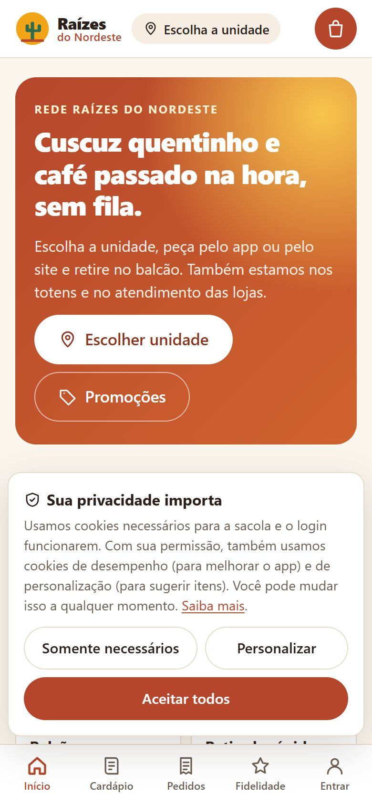
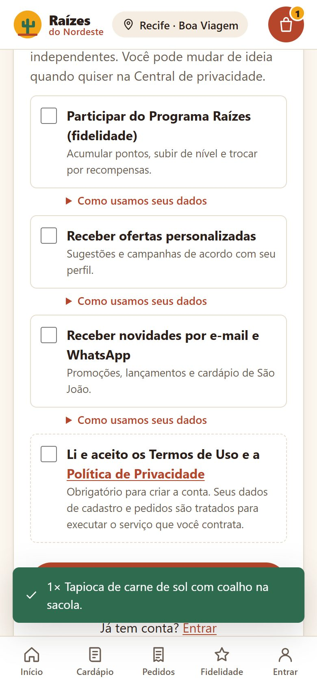
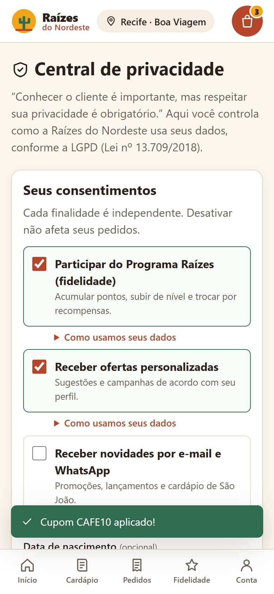
Fonte: capturas da aplicação publicada (2026).
Figura 15 – Revogação de consentimento e acesso auditado a dados pessoais
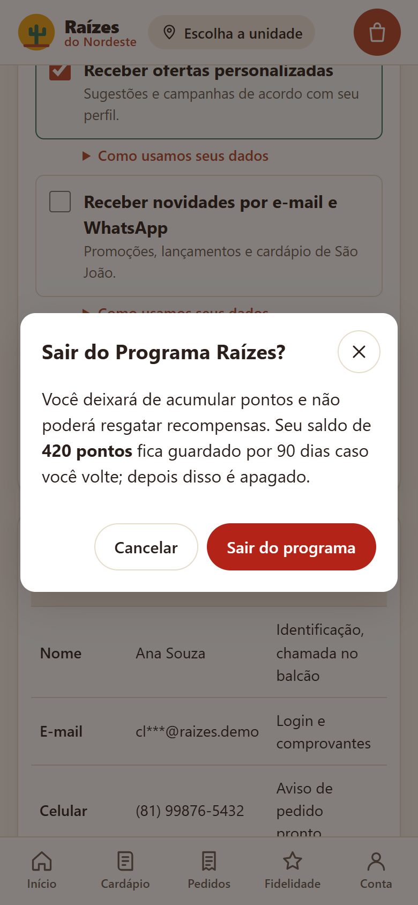
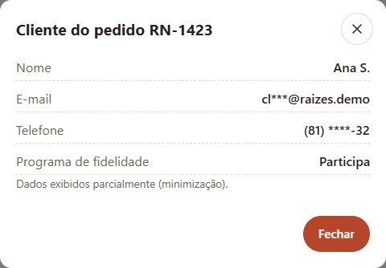
Fonte: capturas da aplicação publicada (2026).
Quadro 11 – Dados pessoais tratados por canal
| Canal | Dados | Finalidade | Base legal | Retenção |
|---|---|---|---|---|
| App e site | Nome, e-mail, celular (opc.), CPF (opc.), pedidos | Conta, pedidos, avisos de retirada | Execução de contrato | Enquanto a conta existir |
| App e site | Histórico de consumo, pontos | Programa de fidelidade | Consentimento | Até a revogação (+90 dias do saldo) |
| App e site | Faixa etária, preferências | Ofertas personalizadas | Consentimento | Até a revogação |
| Totem | Primeiro nome (opc.), CPF (opc.) | Chamada no painel; localizar a conta para pontuar | Execução de contrato / consentimento já dado no app | Nome apagado após a retirada; CPF não armazenado no totem |
| Balcão | Primeiro nome, CPF (opc.) | Chamada e pontuação | Execução de contrato | Igual ao totem |
| Gerência e matriz | Dados agregados; dados mascarados sob demanda | Gestão, relatórios, atendimento | Legítimo interesse / obrigação legal | Pedidos: 5 anos, anonimizados após exclusão da conta |
Fonte: elaborado no projeto (2026).
A aplicação está publicada em https://ricotta10.github.io/rede-raizes-do-nordeste/ e o código em https://github.com/Ricotta10/rede-raizes-do-nordeste, ambos públicos. Para avaliar todos os canais em poucos minutos:
CAFE10, entrar com cliente@raizes.demo / cliente123, pagar com Pix ou cartão e acompanhar o pedido.gerente@raizes.demo e matriz@raizes.demo (senha equipe123).Quadro 12 – Tecnologias e estrutura do repositório
| Caminho | Conteúdo |
|---|---|
index.html, css/estilos.css | Casca da aplicação e estilos mobile-first (custom properties, grid, :has). |
js/app.js | Roteador, layouts por canal, banner de cookies, painel de demonstração e inatividade do totem. |
js/domain.js | Regras de negócio puras: estados do pedido, disponibilidade, cupons, totais, fidelidade, validações e mascaramento. |
js/store.js | Estado e API simulada: unidades, sacola, pedidos, pagamento, autenticação (SHA-256 via Web Crypto), fidelidade, LGPD e auditoria. |
js/services/gateway.js | Provedor de pagamento externo simulado: idempotência, Pix, recusa, tempo limite, consulta e estorno. |
js/data.js | Dados simulados: 6 unidades, 20 produtos, 5 campanhas, 3 níveis e 4 recompensas. |
js/views/ | 21 telas: cliente, totem, balcão, cozinha, gerência/matriz, LGPD e erro 404. |
tests/ | Testes unitários (node:test) e testes E2E com navegador real (Puppeteer). |
docs/ | Plano de testes, evidências de execução e capturas de tela. |
sw.js, manifest.webmanifest | PWA: instalação e funcionamento com conexão instável. |
Fonte: elaborado no projeto (2026).
As figuras a seguir foram capturadas automaticamente da aplicação publicada durante a execução dos testes E2E e mostram a jornada completa nos diferentes canais.
Figura 16 – Celular: escolha da unidade, cardápio e produto
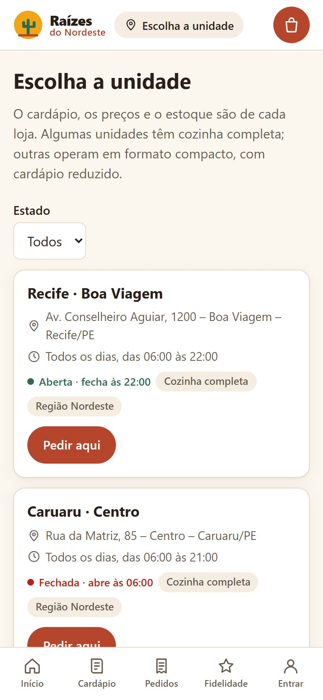
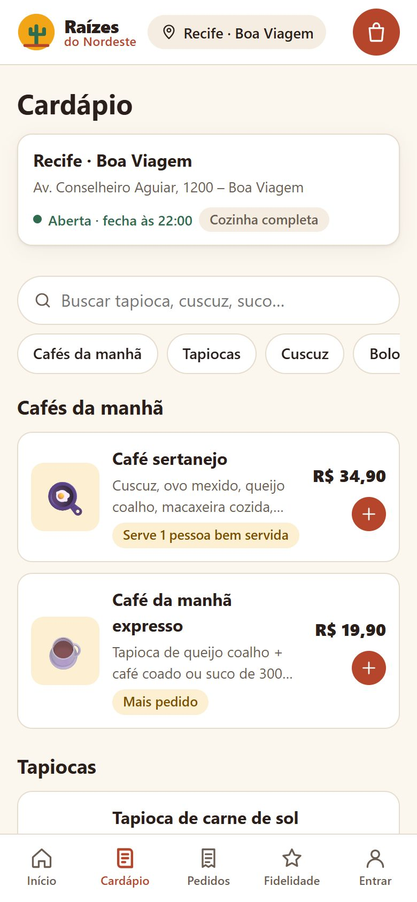
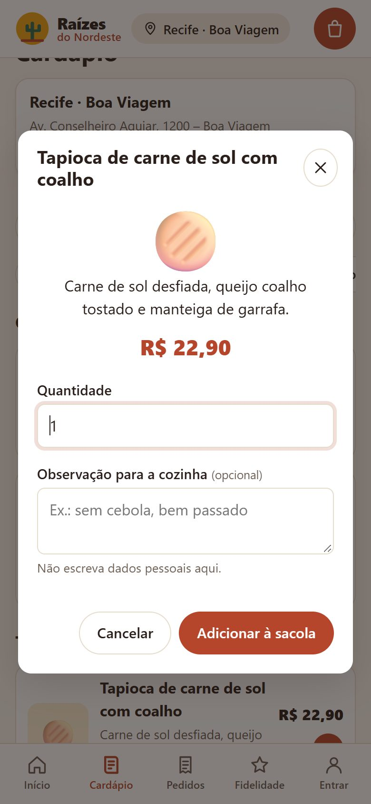
Fonte: capturas da aplicação publicada (2026).
Figura 17 – Celular: sacola, checkout e pagamento
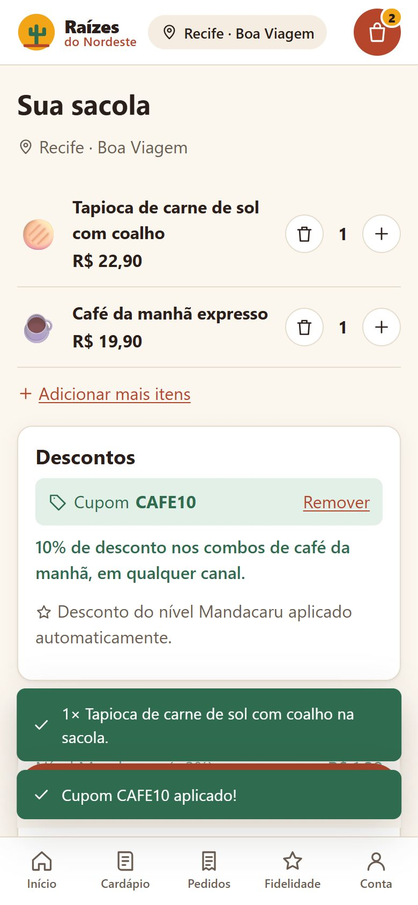
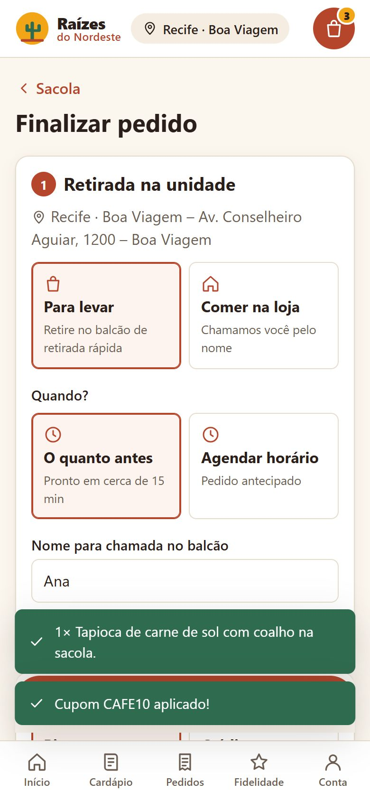
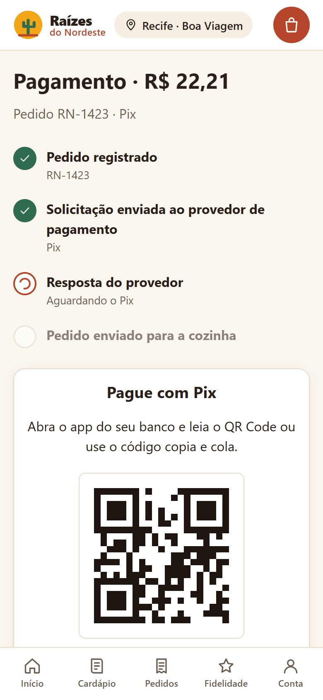
Fonte: capturas da aplicação publicada (2026).
Figura 18 – Celular: confirmação, acompanhamento e programa de fidelidade
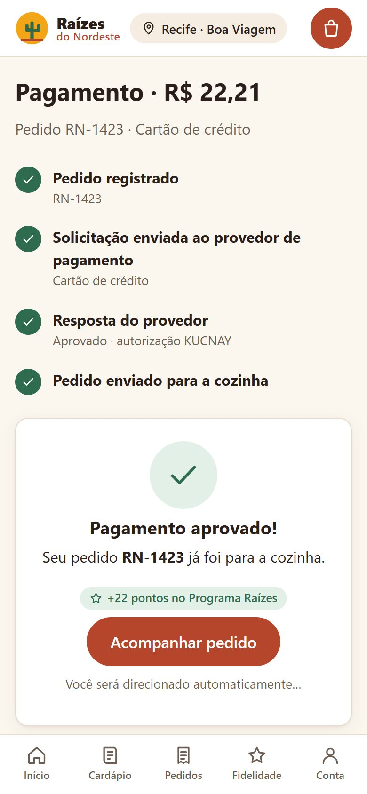
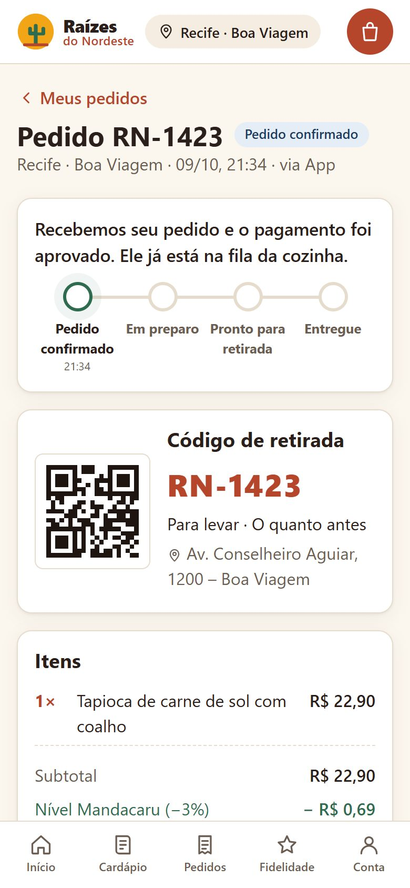
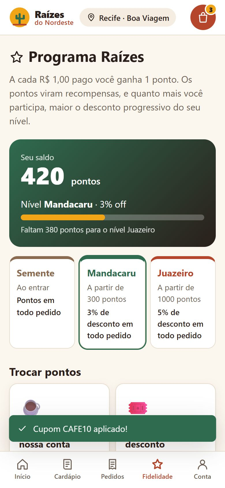
Fonte: capturas da aplicação publicada (2026).
Figura 19 – Site no desktop
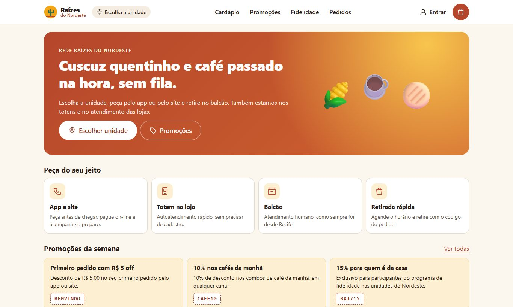
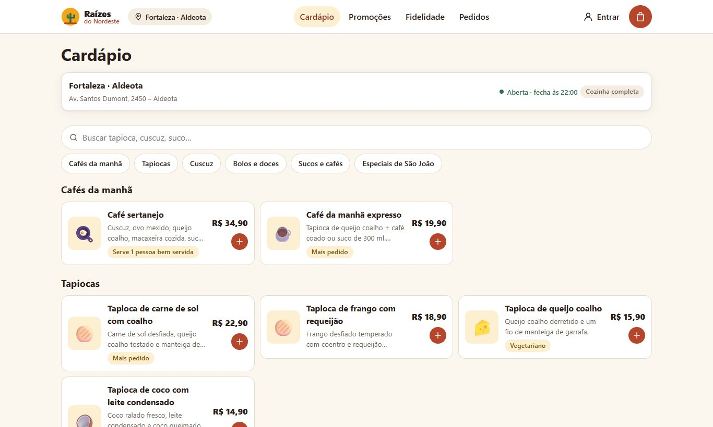
Fonte: capturas da aplicação publicada (2026).
Figura 20 – Totem de autoatendimento
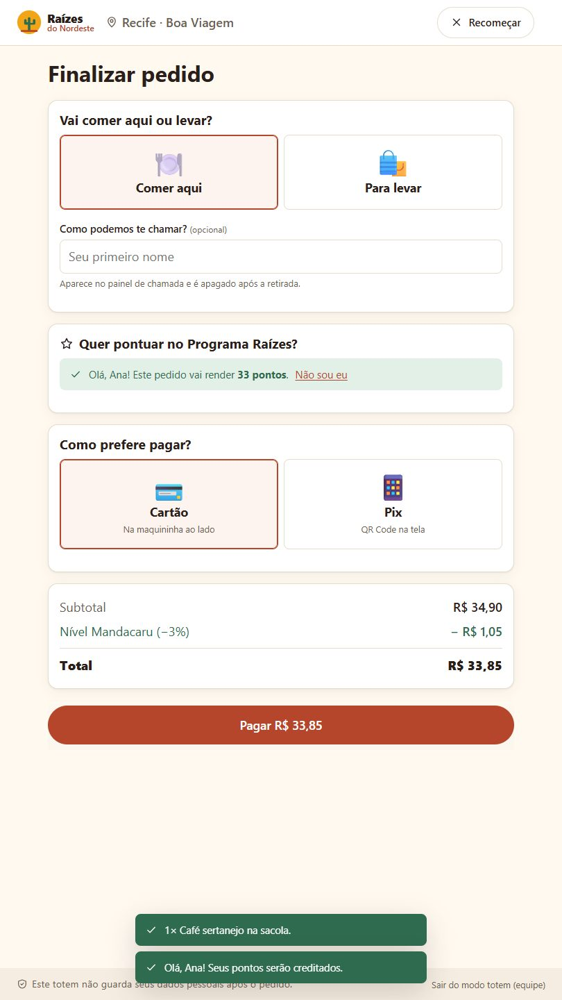
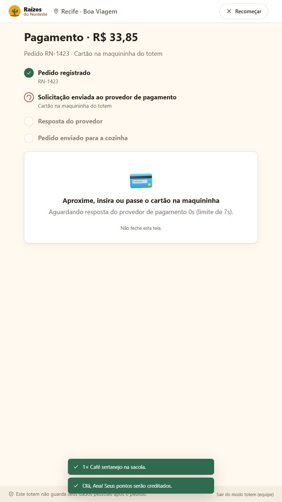
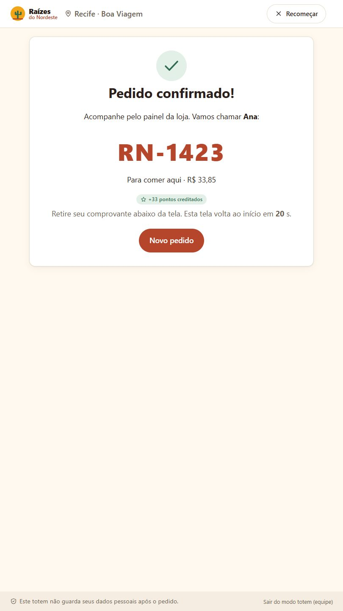
Fonte: capturas da aplicação publicada (2026).
Figura 21 – Sistema interno: balcão e cozinha
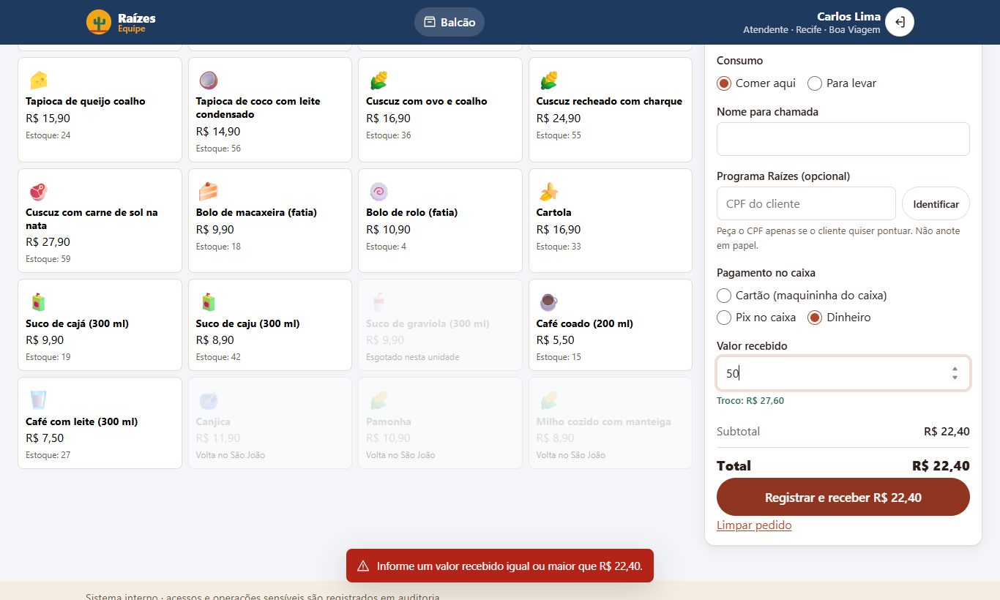
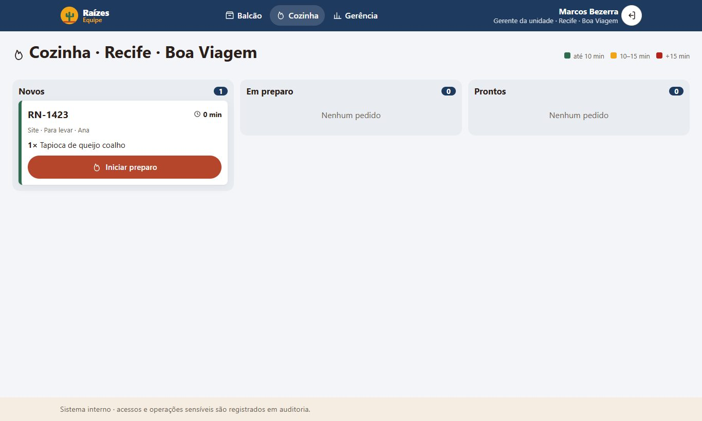
Fonte: capturas da aplicação publicada (2026).
Figura 22 – Gerência da unidade
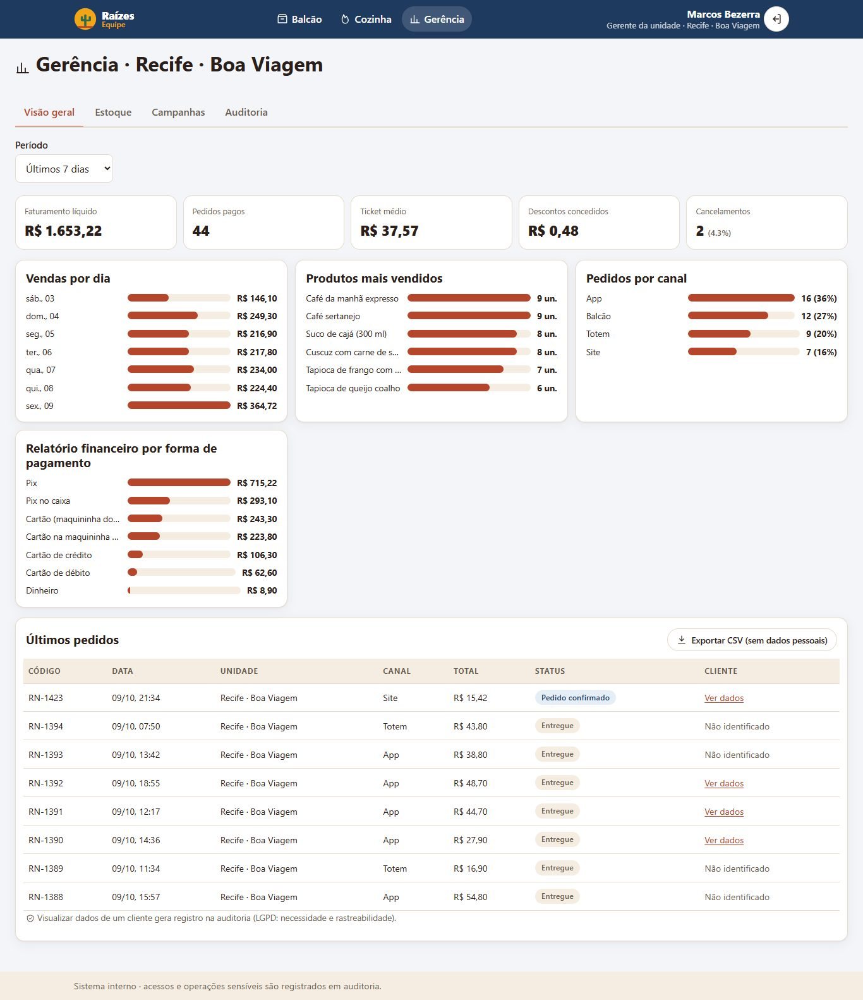
Fonte: capturas da aplicação publicada (2026).
Figura 23 – Auditoria de operações sensíveis
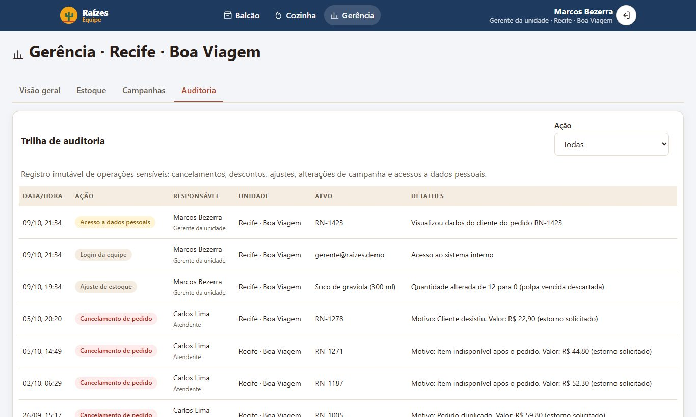
Fonte: capturas da aplicação publicada (2026).
A validação combina testes automatizados, que podem ser repetidos a cada mudança, com verificações de usabilidade feitas por pessoas (Quadro 13). Os cenários foram escritos com entradas, passos e resultado esperado, incluindo casos positivos e negativos, conforme Pressman e Maxim (2021).
Quadro 13 – Estratégia de testes
| Tipo | Objetivo | Como |
|---|---|---|
| Unitário automatizado | Garantir regras de negócio (cupons, totais, estados, validações, LGPD) | 12 testes com node:test em tests/regras.test.js |
| Ponta a ponta (E2E) | Validar os fluxos na aplicação publicada, em navegador real | 24 cenários com Puppeteer + Microsoft Edge em tests/e2e/executar-cenarios.mjs |
| Integração com serviço externo | Respostas do provedor: aprovado, recusado, Pix e tempo limite | Painel de demonstração força cada resposta (CT10 a CT13) |
| Responsividade | Sem rolagem horizontal e layout adequado por largura | 9 telas × 3 larguras (360, 768 e 1280 px) automatizadas (CT23) |
| Privacidade (LGPD) | Consentimento, transparência, minimização e direitos do titular | CT14 a CT18 |
| Segurança | Acesso indevido e força bruta | CT09 e CT24 |
| Usabilidade | Clareza do fluxo e das mensagens | Teste com 3 usuários: pedir uma tapioca e acompanhar até a retirada, observando hesitações e erros (heurísticas de Nielsen) |
Fonte: elaborado no projeto (2026).
Quadro 14 – Cenários de teste da interface
| ID | Cenário | Tipo | Entradas / passos | Resultado esperado |
|---|---|---|---|---|
| CT01 | Cardápio por unidade | Positivo | Escolher Salvador (compacta) → Cardápio | Itens de cozinha completa não aparecem; cuscuz com receita baiana. |
| CT02 | Item sazonal fora de época | Negativo | Cardápio em outubro → Especiais de São João | Itens desabilitados com o selo “Volta no São João”. |
| CT03 | Item esgotado | Negativo | Recife → Suco de graviola | Selo “Esgotado nesta unidade”; não abre o diálogo. |
| CT04 | Limite de estoque | Negativo | Bolo de rolo (4 un.): pedir 6; depois 3 + 2 | Campo bloqueia acima de 4; soma além do estoque: “Só temos 4 unidade(s)…”. |
| CT05 | Cupom inexistente | Negativo | Cupom XYZ | “Cupom não encontrado. Confira o código digitado.” |
| CT06 | Cupom fora do canal | Negativo | Cupom TOTEM5 no site | “Cupom válido apenas em: Totem.” |
| CT07 | Cupom de categoria | Positivo | Café sertanejo + suco; CAFE10 | 10% apenas sobre o café da manhã (R$ 3,49). |
| CT08 | Checkout exige login | Negativo | Continuar sem conta no app | Vai para “Entrar” com aviso; após o login volta ao checkout. |
| CT09 | Login inválido e bloqueio | Segurança | Senha errada 6 vezes | Mensagem genérica; depois de 5 erros, “Aguarde 30 segundos”. |
| CT10 | Pagamento aprovado | Positivo | Provedor = aprovar; cartão de crédito | Etapas concluídas, pontos creditados, ida ao acompanhamento. |
| CT11 | Pagamento recusado | Negativo | Provedor = recusar | Motivo, “Nenhum valor foi cobrado” e opções de nova tentativa. |
| CT12 | Falha de comunicação | Negativo | Provedor = sem resposta | Aviso após 7 s; “Verificar status” confirma sem nova cobrança. |
| CT13 | Pagamento Pix | Positivo | Forma Pix | QR Code, copia e cola, contagem; aprovado por consulta automática. |
| CT14 | Banner de cookies | LGPD | Primeiro acesso | Três opções de mesmo peso; escolha registrada com data. |
| CT15 | Consentimentos no cadastro | LGPD | Enviar sem aceitar os termos | Erro nos termos; opcionais desmarcados; nascimento só com personalização. |
| CT16 | Revogar consentimento | LGPD | Desmarcar fidelidade → salvar | Diálogo com consequências; histórico “Revogado” com data e canal. |
| CT17 | Excluir conta | LGPD | Excluir → digitar EXCLUIR | Conta removida, sessão encerrada, registro na auditoria. |
| CT18 | Acesso a dados pela gerência | LGPD | Últimos pedidos → Ver dados | Aviso prévio, dados mascarados e auditoria do acesso. |
| CT19 | Totem com CPF | Pos./Neg. | CPF 111.111.111-11; depois 529.982.247-25 | “CPF inválido”; depois “Olá, Ana! … pontos”. |
| CT20 | Inatividade no totem | Usabilidade | 90 s sem toque | “Você ainda está aí?” e reinício com sacola vazia. |
| CT21 | Balcão em dinheiro | Negativo | Recebido R$ 10 para total R$ 22,40; depois R$ 50 | Bloqueio com mensagem; troco de R$ 27,60. |
| CT22 | Cancelamento auditado | Positivo | Cancelar pedido pago no balcão com motivo | Estorno, pontos revertidos e registro na auditoria. |
| CT23 | Responsividade | Não funcional | 9 telas em 360, 768 e 1280 px | Sem rolagem horizontal e sem erros de script. |
| CT24 | Controle de acesso | Segurança | Visitante e atendente em telas restritas | Visitante vai ao login; atendente volta ao balcão. |
Fonte: elaborado no projeto (2026).
{{E2E_RESUMO}} O Quadro 15 traz o resultado obtido em cada cenário, copiado do registro gerado pelo script (docs/evidencias/resultado-e2e.md). Os testes unitários das regras de negócio também foram executados, com {{UNIT_RESUMO}} (Apêndice A).
Quadro 15 – Registro de execução dos testes E2E
{{E2E_TABELA}}Fonte: execução automatizada na aplicação publicada ({{E2E_DATA}}).
A Figura 24 mostra as mensagens de erro exibidas nos cenários negativos: cada uma diz o que aconteceu e qual é o próximo passo.
Figura 24 – Tratamento de erros e exceções
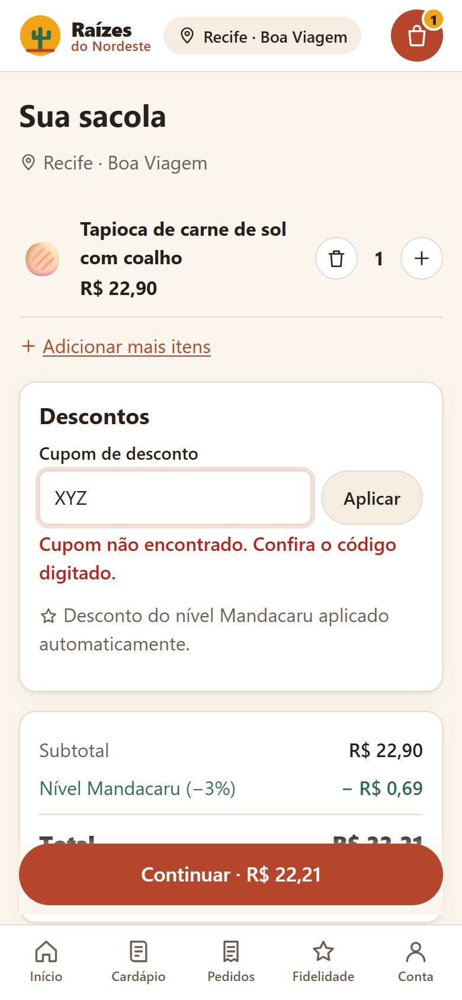
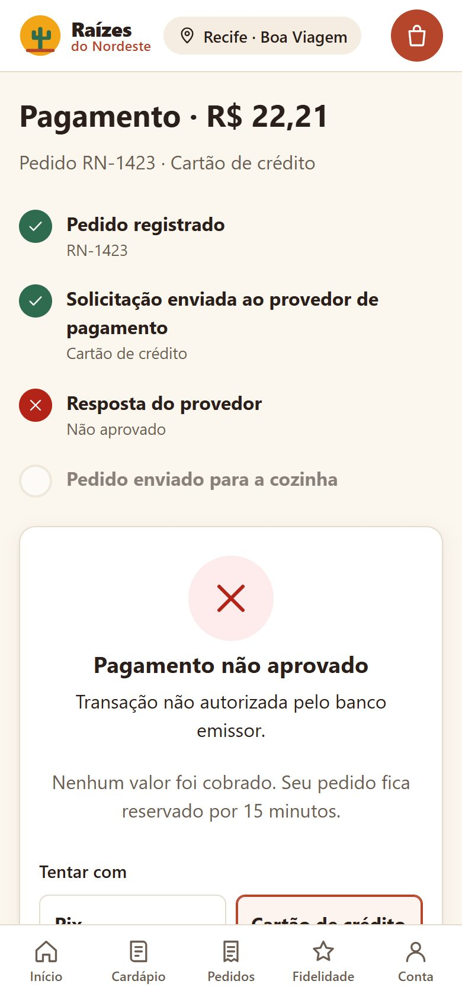
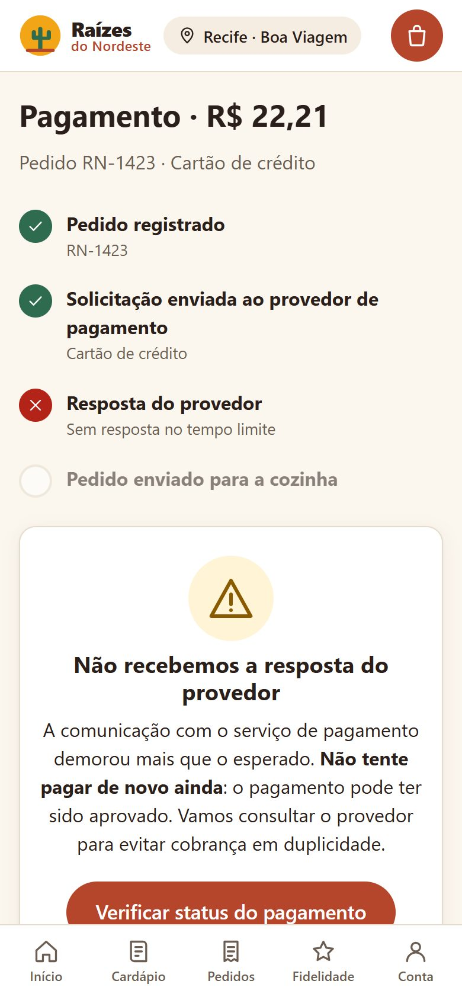
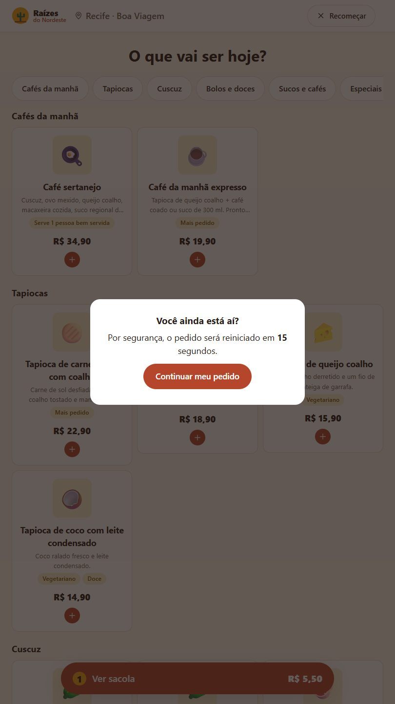
Fonte: capturas da aplicação publicada (2026).
Quadro 16 – Riscos de pico e mitigação na interface
| Risco | Mitigação | Validação |
|---|---|---|
| Provedor de pagamento lento ou fora do ar | Tempo limite de 7 s, aviso claro, consulta de status e idempotência | CT12 |
| Clique duplo em “Pagar” | Botão desabilitado após o envio e controle de pagamento em andamento | CT10 |
| Estoque acaba enquanto o cliente escolhe | Revalidação na sacola e no checkout; reserva na criação do pedido | CT03, CT04 |
| Pedidos “presos” sem pagamento | Expiração automática em 15 minutos com devolução do estoque | Teste unitário da máquina de estados |
| Totem abandonado no meio do pedido | Reinício após 90 s sem toque, com aviso de 15 s | CT20 |
| Cozinha sobrecarregada | Cores por tempo de espera (SLA) e pedidos agendados liberados 15 min antes | Captura do KDS (Figura 21) |
| Pico de acessos | Site estático em CDN, sem build e com poucos kilobytes | RNF03, RNF04 |
| Conexão instável na loja | Service worker com cache de reserva | RNF05 |
Fonte: elaborado no projeto (2026).
O projeto entregou a interface multicanal da Rede Raízes do Nordeste, publicada e acessível, cobrindo os requisitos obrigatórios da trilha: cadastro e autenticação, cardápio por unidade, pedido, acompanhamento, fidelidade, promoções, pagamento externo e LGPD, sempre com abordagem mobile-first e responsiva. A principal escolha foi tratar App, site, totem, balcão, cozinha e gerência como layouts diferentes sobre o mesmo núcleo de regras. Assim, um cupom, um estoque ou um estado de pedido valem igualmente em todos os canais, e o pedido feito no celular aparece na cozinha sem qualquer conversão.
Integrações. O pagamento desacoplado foi o ponto mais delicado. Representá-lo bem exigiu pensar como o sistema se comporta quando o outro lado falha: tempo limite, chave de idempotência, consulta de status antes de nova cobrança, estorno e expiração. Essas decisões de interface têm impacto direto no negócio, porque evitam cobrança duplicada e pedidos esquecidos, e geram requisitos claros para o back-end, registrados como contratos de endpoint (Quadro 8). A troca dos dados simulados pela API real fica restrita ao módulo de estado.
Relação com QA. Separar as regras de negócio em funções puras permitiu testá-las automaticamente, e os cenários E2E viraram um roteiro executável que roda em navegador real contra a versão publicada. Durante o trabalho, os próprios testes revelaram ajustes: um diálogo que dependia de um evento entregue com atraso por alguns navegadores e um limite de quantidade que o campo já bloqueava antes da mensagem do sistema. Isso reforça que qualidade é parte do desenvolvimento, e não uma etapa final.
LGPD. Demonstrar privacidade na interface significou ir além do aviso: consentimentos separados e desmarcados, minimização (data de nascimento apenas com consentimento, CPF opcional e não guardado no totem), mascaramento para a equipe, relatórios agregados e auditoria de cada acesso. O programa de fidelidade segmentado continua possível, mas apenas com o público que consentiu.
Desafios e lições. O maior desafio foi equilibrar riqueza de funcionalidades com clareza: cada exceção precisava de uma mensagem que orientasse o próximo passo. A lição principal é que o fluxo “feliz” é a menor parte do trabalho; a robustez percebida pelo cliente está no tratamento dos casos de erro.
Evoluções futuras. Integrar com a API real e notificações em tempo real (WebSocket); adicionar notificações push de pedido pronto; testes de usabilidade com clientes reais das lojas; acessibilidade auditada com leitores de tela em todos os canais; painel de chamada para TV no salão; internacionalização para turistas; e migração para um framework de componentes caso o time cresça.
AUTORIDADE NACIONAL DE PROTEÇÃO DE DADOS (ANPD). Guia orientativo: cookies e proteção de dados pessoais. Brasília: ANPD, 2022. Disponível em: https://www.gov.br/anpd. Acesso em: 9 out. 2026.
BRASIL. Lei nº 13.709, de 14 de agosto de 2018. Lei Geral de Proteção de Dados Pessoais (LGPD). Diário Oficial da União: seção 1, Brasília, DF, 15 ago. 2018.
CENTRO UNIVERSITÁRIO INTERNACIONAL UNINTER. Projeto Multidisciplinar: orientações e estudo de caso – Rede “Raízes do Nordeste”. Curitiba: UNINTER, 2026.
CENTRO UNIVERSITÁRIO INTERNACIONAL UNINTER. Roteiro de atividade prática de Projeto Multidisciplinar: trilha Front-End – Rede “Raízes do Nordeste”. Curitiba: UNINTER, 2026.
FOWLER, Martin. UML essencial: um breve guia para a linguagem-padrão de modelagem de objetos. 3. ed. Porto Alegre: Bookman, 2005.
GARRETT, Jesse James. The elements of user experience: user-centered design for the web and beyond. 2. ed. Berkeley: New Riders, 2011.
KRUG, Steve. Não me faça pensar: atualizado. Rio de Janeiro: Alta Books, 2014.
MDN WEB DOCS. Recursos para desenvolvedores, por desenvolvedores. Mozilla, 2026. Disponível em: https://developer.mozilla.org/pt-BR/. Acesso em: 9 out. 2026.
NIELSEN, Jakob. 10 usability heuristics for user interface design. Nielsen Norman Group, 2024. Disponível em: https://www.nngroup.com/articles/ten-usability-heuristics/. Acesso em: 9 out. 2026.
PCI SECURITY STANDARDS COUNCIL. Payment Card Industry Data Security Standard (PCI DSS): version 4.0. Wakefield: PCI SSC, 2022.
PRESSMAN, Roger S.; MAXIM, Bruce R. Engenharia de software: uma abordagem profissional. 9. ed. Porto Alegre: AMGH, 2021.
SOMMERVILLE, Ian. Engenharia de software. 10. ed. São Paulo: Pearson, 2018.
W3C. Web Content Accessibility Guidelines (WCAG) 2.2. W3C Recommendation, 2023. Disponível em: https://www.w3.org/TR/WCAG22/. Acesso em: 9 out. 2026.
WROBLEWSKI, Luke. Mobile first. New York: A Book Apart, 2011.
Este apêndice reúne registros que comprovam o processo de desenvolvimento: o histórico de versões do repositório, a saída da execução dos testes automatizados e a relação dos artefatos de evidência publicados.
Histórico completo e público em: https://github.com/Ricotta10/rede-raizes-do-nordeste/commits/main
Quadro 17 – Histórico de commits do repositório
{{GIT_LOG}}Fonte: git log do repositório ({{DATA_GERACAO}}).
{{TESTES_UNITARIOS}}
docs/plano-de-testes.md: estratégia e 24 cenários de teste;docs/evidencias/resultado-e2e.md e .json: registro da última execução E2E, com data, hora e duração de cada cenário;docs/evidencias/telas/: {{QTD_TELAS}} capturas de tela geradas durante os testes;tests/: código dos testes, que pode ser executado novamente com npm test e node tests/e2e/executar-cenarios.mjs.Conforme exigido pelos roteiros da atividade, declaro o uso de ferramenta de inteligência artificial neste trabalho.
| Ferramenta | Claude (Anthropic), modelo Claude Opus 5.5, utilizado por meio do aplicativo Claude Code. |
|---|---|
| Objetivos de uso | Análise dos dois documentos da atividade e planejamento; desenvolvimento do código-fonte do front-end; criação dos testes automatizados (unitários e E2E); elaboração dos diagramas e wireframes; redação deste documento. |
| Prompts utilizados | {{PROMPTS_IA}} |
| Trechos aproveitados | O código-fonte do repositório, os testes, os diagramas, os wireframes e o texto deste documento foram gerados com a ferramenta. Os commits do repositório registram a coautoria (Co-Authored-By: Claude). |